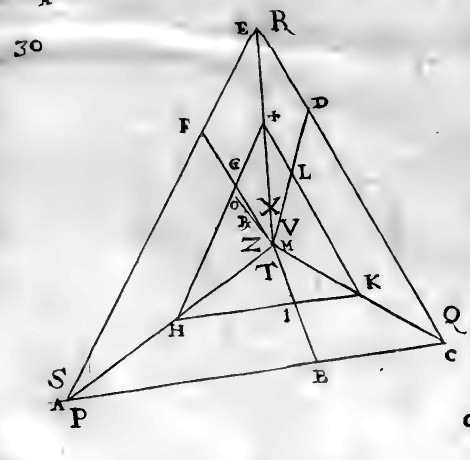

Proposition XXV: Concurrent Lines in a Pyramidal Frustum¶


Proposition XXV · Theorem XIV (pp. 33–34, Tab. 3, Fig. 30)
Let there be a pyramid whose vertex is M, and whose base is triangle AEC; and let ✠H be drawn, cutting EM at ✠ and AM at H; from any point K taken at pleasure on the same, let us join two lines KH, K✠; let line MF cut H✠ at G; likewise let MB cut HK at I, and MD cut K✠ at L; and with FB, AD joined meeting each other at O, let straight lines HL, IG, MO be drawn. I say that these intersect one another as at ℞; and the heavy bodies suspended from the angles will preserve, as in the preceding, that harmony of ratios.
(Tab. 3, Fig. 30) Let it be made as CB to BA, so weight P to Q; as ED to DC, so Q to R; and as AF to FE, so R to S; this posited, point O will be the center of gravity of weights S, P, Q, R. Next, as MK to KC, so let weight Q to V be made, and as M✠ to ✠E, so R to X; and similarly point L will be the center of gravity of heavy bodies R, Q, V, X; finally, as MH to HA, so let weight S to Z and P to T be placed, and G will likewise be the center of gravity of heavy bodies R, X, Z, S, I of heavy bodies P, T, V, Q, and H of heavy bodies S, Z, T, P; wherefore it is clear that on each of the balance-beams HL, IG, MO exists the center of gravity of all suspended heavy bodies, which since it is unique, it is necessary
f. 0051 · p. 34that they intersect one another at the same point, such as ℞; and of this kind is that center also of the same balance-beams; therefore the proposition is established.